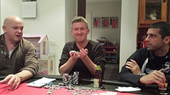
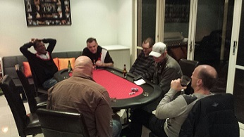

.....New Venue...New Players....BBQ Feast and inappropriate stories galore....
| Date | Location | Game | Players |
|---|---|---|---|
| {{tournaments.tournamentOne[0].eventDate}} | {{tournaments.tournamentOne[0].location}} | {{tournaments.tournamentOne[0].tournament}} | {{tournaments.tournamentOne[0].noOfPlayers}} |
| Position | Name | Points |
|---|---|---|
| {{result.position}}{{positionSuffix(result.position)}} | {{result.name}} | {{result.points}} |
| Bounty Winner |
|---|
| {{tournaments.tournamentOne[0].bountyWinner}} |
| Position | Name | Played | Won | Win Ratio | Ave Points | Ave Position | Points |
|---|---|---|---|---|---|---|---|
| {{$index + 1}}{{positionSuffix($index + 1)}} | {{result.name}} | {{result.played}} | {{result.won}} | {{result.won / result.played * 100| number:2}} % | {{result.points / result.played | number:2}} | {{result.averagePosition | number:2}} | {{result.points}} |
Poker returned to "The Square" at a new venue with the host with the most Mark V welcoming 7 players to a pre-game BBQ. Buffalo wings and prize winning fire breathing snags which had anecdotal evidence of the day after "white man sting in their tail" were gratefully consumed over a cold one. Two new players were offically unveiled, Junior and Simon M who due to copyright naming conflicts was renamed to Simon W, in honour of his albino pet 'W'ombat, and who was hoping for a windfall in the poker to offset the mammals expense ledger.
For consecutive events, Jade was chosen as the random 'Super bonus' player hoping to take down the massive rollover pot, and with gastric juices working overtime from Mark V's culinary offering, players safely stored their receptacles ready for the nights game.
The first hand did not fail to deliver with newbie Junior taking down a reasonable pot with a full house. Simon must have been quickly studying Juniors flying start and the second hand also saw him take down a good size serve of chips with another full house. And just to complete the trifecta, the third hand also ended with a full house and exposing Juniors attempted bluff along the way. The game of attrition was already on, with some of the regulars wondering what they had let themselves in for with the new player dynamics.
Junior tried out the cup holders tolerance level with his beer, as the beer Samba'd out of the holder onto the felt and Brian's cards, but the table and card quality shone through as if nothing had happened. Dave's error prone dealing was receiving some friendly derision, but Jade didn't mind as his pocket aces held out against Dave's pocket Kings. With Brian stating that the odds of being dealt aces was approximately 220 to 1, the next hand gave Junior pocket aces (75% of statistics are made up - much like this commentary), and with Mark V and Brian holding Kings with a K44 flop, the hand was going to be interesting. Brian bailed sensing danger that someone might be holding a 4, but Mark V sniffing a bluff held in to the end to see Juniors contented smile as he flipped over his winning cards. Mark V did get though go into the break as the chip leader as he relinquished Jade of some of his stack after beating Jade's 3 of a kind with a flush, leaving Jade protesting "it jost aint roight that a @#&!% flush beats a @#&!% 3 of a kind".
The second hour recommenced with Brian and the intensely concentrating Ben seeing very little of the action. Simon soon found himself all in against Mark V, but Simon's flush was no match for yet another full house, thus allowing Simon to receive his secondary chip up nearly an hour before other players. Another massive hand saw a three way battle between both Mark's and Simon. Mark L holding K,Q, Simon K,5 and Mark V 10,5 against a K,10,10 flop was only going to end in tears. With the turn and river card not helping anyone to improve their hand, Mark V managed to drain plenty of his combatants stacks.
Jade was the lucky recipient of pocket aces for his second time of the night, but this time came unstuck as Mark V took out the pot with 3 of a kind to go into the second break as the clear chip leader. Jade was again ruing his bad luck, but consoled himself with another beer.
With blinds now at $100/$200, every decision was having major impacts on players chip balances, but Dave was having some success to keep his stack heading in the right direction. The hand of the night had to be Dave dealing out three tens on the flop. With Jade holding two of a kind, an instant full house was surely going to see him paid off. Only Mark V holding a 10 in his hole cards was going to give him grief, and with Mark V only calling Jade's bets all the way suggested Jade was looking likely to create a bingle in Mark's stack. With all of Jades chips now off on vacation in the centre of the table, we all know what happens next. Mark V flipped the 10 and Jade exited the game in last place, looked up to the heavens, exhausted his supply of expletives, and cracked open yet another beer to drown his sorrows. His demise means the super bonus rolls over to the next event and is now starting to mature into something that will no doubt have a welcoming recipient down the track.
Simon who had almost gone out earlier had clawed back some chips, but was now being blinded out to the point that he could not hold out and was next out in 7th place. Junior's early Brazilian flair had run out of steam quicker than an empty kettle and he also suffered a similar fate despite his ongoing bluffing attempts and finished his night in 6th place. The new boys had shown that they are more than capable of playing the game and will be welcome additions to future events.
With blinds and antes now putting on more pressure than an over inflated bicycle tyre, Ben and Brian (both who who had hardly won a pot all night), were heads-up, with the flop kindly offering Ben two pairs, but favoured Brian with a straight! Ben pushed all in, but was snapped called by Brian. The turn card helped no-one and the river card gave Brian a full house, rubbing salt into Ben's already painful open wound. Ben was consigned to 5th place (declining to comment in the post-game interview) with Brian's stack now heading towards comparable levels with Mark V's.
|  |
| Brian showing off all the chips to the disinterested new players |
With the top 3 players being paid, the 4th place "bubble" was going to be one of Brian, Mark V, Mark L or Dave. Whether alcohol driven over confidence or well timed aggression, Brian was now starting to ask the remaining players bigger questions about their moves. With an all-in that Mark V called, Brian took a massive chunk of Mark V's stack, moving Brian into chip leader position. In fact, within a few short hands, Mark V's stack was moving away from him quicker than a beer down Jades gullet, and it wasn't long before Brian cleaned him out with another all-in, leaving Mark V exiting in 4th spot and looking on jealously at the cash that so nearly had his name on it.
Dave was quietly sitting on his previously won chip stack avoiding any major battles, so Brian had the honour of denting Mark L's stack to the point that Mark L only had enough for one more blind. The final hand of the night saw the two remaining players calling Brian's all in with QJs, after the flop gave Brian top pair, Dave a flush draw, but nothing to help Mark L. With two cards to come, Dave was marginally behind to relieve Brian of some of his chips, but did not get the final luck he needed, going out in respectable second place with Mark L going out in 3rd. Brian's patient game had luckily payed off, and he smiled and posed for the customary picture with all of the $40,000 chips in front of him.
|  |
| Exhausted players enjoying Jades legendary tales |
No-one seemed to want the night to end, with everyone staying to enjoy Jade's canine anecdotes, with Junior suggesting there would be plenty of offers for dog sitting in the future, whilst Mark L disappeared into the garden to give Mark V's lemon trees a helping hand. A final early morning night cap finally saw the remaining players depart for their doona's, although Jade may require a GPS next time as he must have misplaced his normally reliant homing pigeon instincts, but Mark V's gentle guidance sending him home in the right direction.
So the ladder is showing Brian now sporting a healthy 14 point buffer to Mark V who stays in 2nd place with 16 points. No change for 3rd spot with Ben sitting pretty on 14 points, but Dave charges up four places to 4th spot, just one point behind, and having played one less game. Mark L joins the ladder in fifth place with a healthy 8 point haul at the expense of Jade, Steve and Simon M who drop places respectively. Junior joins the ladder in 9th, with Andy's absence pushing him down a place to 10th and the bottom dweller Simon (Wombat) M rounding off the placements.
Thanks to Mark V's hosting skills allowed another fun filled night full of hearty guffaws and healthy banter. The camaraderie traction can only increase over the forthcoming events although we might need to invest in an extra recycle bin....
Looking forward to the next exciting installment....Vegas anyone? :)